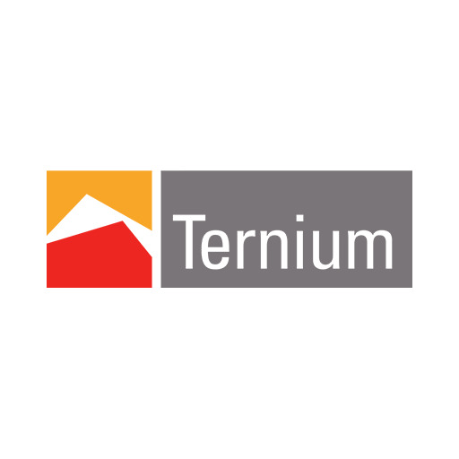

| ¿Qué es? | ¿Qué puestos relacionados a mi carrera hay? |
|---|---|
|
Ternium es una empresa siderúrgica líder en América Latina, que produce y comercializa una amplia variedad de productos de acero de alta calidad para distintas industrias.
La empresa fue fundada en 2005, tiene su sede en Luxemburgo y opera en 12 países de América Latina, incluyendo México, Argentina, Colombia y Brasil. Ternium se enfoca en la producción de acero de alta calidad y la innovación, y cuenta con una amplia variedad de productos, incluyendo láminas, perfiles, tubos y alambrón, entre otros. La empresa trabaja con clientes en una variedad de sectores, como la construcción, la energía, la automotriz, la manufactura y la industria de bienes de consumo. Ternium se preocupa por el medio ambiente y la sostenibilidad, y trabaja para reducir su impacto ambiental y mejorar su eficiencia energética. La empresa ha sido reconocida por sus esfuerzos en la gestión sostenible de los recursos naturales y en la reducción de su huella de carbono. En cuanto a su cultura empresarial, Ternium se enfoca en la seguridad, la integridad y la responsabilidad social corporativa. La empresa valora la diversidad y la inclusión, y trabaja para crear un entorno de trabajo seguro y colaborativo para sus empleados. En resumen, Ternium es una empresa líder en la producción y comercialización de productos de acero de alta calidad en América Latina. La empresa se enfoca en la innovación, la sostenibilidad y la responsabilidad social corporativa para impulsar su éxito y contribuir positivamente al mundo.  |
Ternium ofrece diversas oportunidades de trabajo para ingenieros en sistemas en distintas áreas de la empresa. Algunas de las áreas en las que se podrían desempeñar estos profesionales son: 1. Tecnología de la información: Los ingenieros en sistemas pueden trabajar en el departamento de tecnología de la información de Ternium, encargándose del mantenimiento y la mejora de los sistemas de la empresa. 2. Desarrollo de software: Los ingenieros en sistemas pueden trabajar en el desarrollo de software para proyectos de la empresa, participando en el diseño, implementación y pruebas de software. 3. Análisis de datos: Los ingenieros en sistemas pueden trabajar en el análisis de datos de la empresa, colaborando con otros profesionales para extraer información útil para la toma de decisiones de la empresa. 4. Automatización de procesos: Los ingenieros en sistemas pueden trabajar en la automatización de procesos de la empresa, buscando mejorar la eficiencia y reducir los costos a través de la implementación de tecnología. Además de estas áreas, Ternium también ofrece oportunidades de trabajo en áreas como seguridad informática, gestión de proyectos de tecnología, infraestructura de tecnología, entre otras. La empresa valora la innovación y la colaboración, y busca atraer y retener a los mejores talentos para impulsar su éxito en el mercado. Los ingenieros en sistemas que se unan a Ternium tendrán la oportunidad de trabajar en un ambiente dinámico y desafiante, y ser parte de una empresa líder en su industria. |